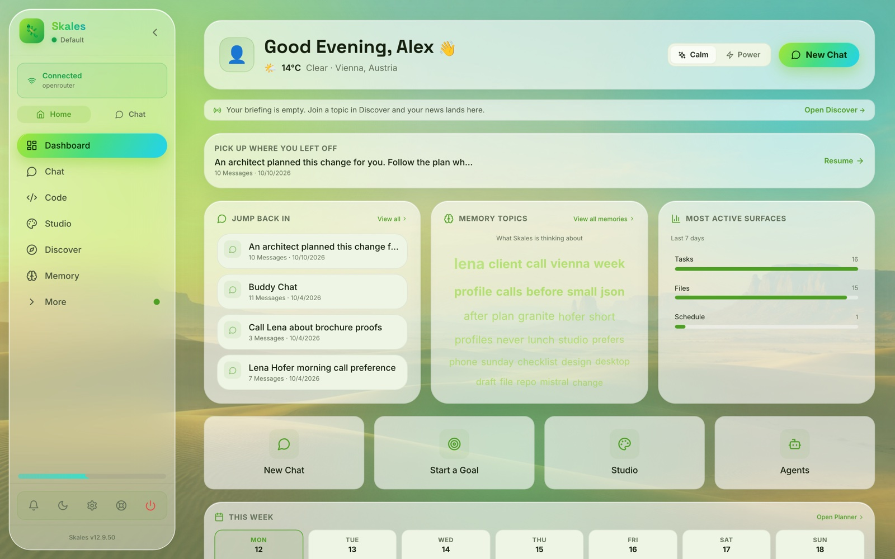

Threads｜Skales 本機 AI Agent：可用性、資料路徑與專有授權查核

一句話摘要
Skales 的核心賣點是「不用 Docker 或終端機、以一般桌面 App 安裝，讓 Agent 在你的裝置上操作檔案、瀏覽器與其他工具」。這個方向有官方 README 與發行 repo 可交叉核對；但它不是開源產品，且「本機」不等於所有資料都不會離開裝置。模型選擇、API 金鑰、選用的線上服務、檔案範圍與授權用途，必須在交給 Agent 真實任務前先釐清。
來源貼文說了什麼
Threads 帳號 `aiposthub` 將 Skales 介紹為可在 Windows、macOS 與 Linux 安裝的本機 AI 助理，並指出可處理多步驟任務、讀取與整理檔案、操作瀏覽器／桌面程式、管理計畫與記憶，以及連接雲端或本機模型。
貼文中最值得保留的提醒有兩項：
- 使用雲端模型時，部分任務內容仍可能送至模型供應商；本機介面不是資料流的保證。
- Skales 現行授權不是開源授權；個人／教育、組織評估與持續商業用途適用不同條件。
官方 repo 可確認的產品範圍
`skalesapp/skales` 的 GitHub API 顯示 repo 為公開、未封存；其 README 將 Skales 描述為可在 macOS、Windows、Linux、Android 與 iOS 使用的個人 AI Agent。官方列出的方向包括：
- 在本機裝置處理多步驟、背景任務與檔案工作。
- 桌面與瀏覽器操作、排程任務、計畫與記憶。
- 選用雲端模型供應商、自備金鑰（BYOK），或經 Ollama 執行本機模型。
- 支援 MCP、Agent skills、語音與行動裝置配對等整合方向。
- 提供 Windows、macOS 與 Linux 的官方桌面下載，以及 Android、iOS 的行動入口。
這些是產品自述與公開文件可支持的「能力方向」，不是所有帳號、平台或模型皆已無條件提供的保證。尤其瀏覽器控制、郵件、行事曆、檔案修改與背景任務都涉及實質權限，應以當前版本實測及設定頁為準。
關鍵澄清：GitHub 公開，不代表開源
Skales 的 GitHub repo 是發行、版本紀錄、文件與 issue tracker 的公開入口；README 明確表示，目前產品為 proprietary，且不提供或承諾提供原始碼。GitHub API 的 license 欄位也標示為 `Other`，而非 OSI 開源授權。
目前 repo 的 EULA（v1.2，2026-09-14）明定：
| 使用情境 | 官方條款重點 |
| --- | --- |
| 個人與教育 | 私人、學生、教師及非商業教育機構可在自己控制的裝置上免費安裝使用。 |
| 組織評估 | 每個組織可進行一次、30 天的評估。 |
| 持續商業使用 | 公司、企業、公部門或任何對價使用，需取得 Skales 的書面商業授權。 |
| 禁止事項 | 不可未經授權轉售、白牌、再散布、提供代管／SaaS、或繞過完整性、授權與驗證機制。 |
所以「可免費下載」與「可長期用於公司工作」是兩件不同的事。若要在機構內導入、對外代管、包進服務或為客戶處理資料，應先向權利人確認書面授權，而非只依社群貼文判斷。
本機、雲端模型與資料路徑
EULA 指出，provider keys、對話、檔案與記憶會留在裝置上，**除非使用者自行連接服務**；而選用的線上服務可能需要交換授權／更新檢查、relay 訊息及使用者選擇送出的報告等資料。README 同時列出雲端供應商、自備 API key 與 Ollama 本機模型選項。
因此可用下面的簡化判斷：
- **選本機模型**：推論可留在自己的環境，但模型下載、更新、搜尋、relay、外掛與其他整合仍可能連網。
- **選雲端模型**：提示詞、任務脈絡及工具回傳的內容可能傳往所選供應商；要依該供應商的條款、保留政策與 API 設定判斷。
- **開啟工具與整合**：即使模型本機跑，瀏覽器、自動化、郵件、行事曆或外掛被授權後，仍可能使資料流向對應服務。
不要把「桌面 App」或「Local-first」當成資料絕不外傳的同義詞。
建議的低風險試用方式
- 僅從 `skales.app`、官方 GitHub releases 或官方商店入口取得安裝檔，記錄版本與下載來源。
- 初次只用一個空白、專用資料夾，放公開資料的副本；輸出另存新檔，勿開放整個家目錄、雲端同步資料夾或工作磁碟。
- 先完成可回復任務，例如依公開活動文件產生繁中摘要草稿；禁止刪除、傳送、發布、付款與登入外部帳號。
- 在設定中確認當下使用的模型與提供者；若是雲端模型，勿輸入個資、機密、金鑰、密碼、OTP 或未公開文件。
- 驗收輸出檔是否存在、內容是否正確、原檔有沒有被修改；確認停止、撤銷連接與清除記憶的方式後，再逐步擴大範圍。
- 商業或團隊用途先完成授權審查；不要把個人免費資格延伸為組織可免費部署。
適合與不適合的起點
適合：想以一般 App 體驗本機 Agent、用公開資料做草稿整理／原型、想比較雲端模型與 Ollama 本機模型資料路徑的人。
不適合直接上手的情境：客戶資料、學生成績、主信箱、付款、不可回復的檔案批次修改、對外發送或未經授權的公司持續商業流程。
真正的判斷標準不是「它能不能自動做很多事」，而是每個動作能否被限制、看見、驗收、停止並復原。
原始與查核連結
- Threads 原貼文：https://www.threads.com/@aiposthub/post/DeZMTeCEmk8
- AI 郵報教學（來源文章）：https://www.aiposthub.com/skales-local-ai-agent-setup-privacy-license-guide/
- Skales 官方發行 repo：https://github.com/skalesapp/skales
- 當前 EULA：https://github.com/skalesapp/skales/blob/main/LICENSE
- Skales 授權頁：https://skales.app/licence
- 官方文件：https://docs.skales.app